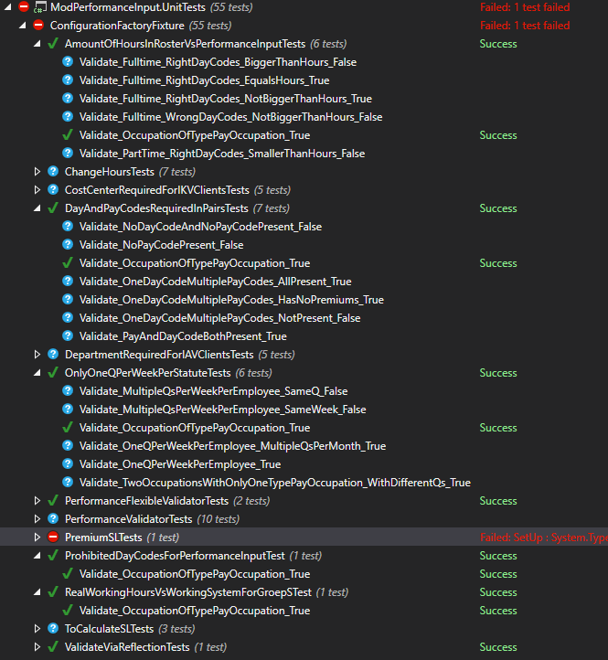
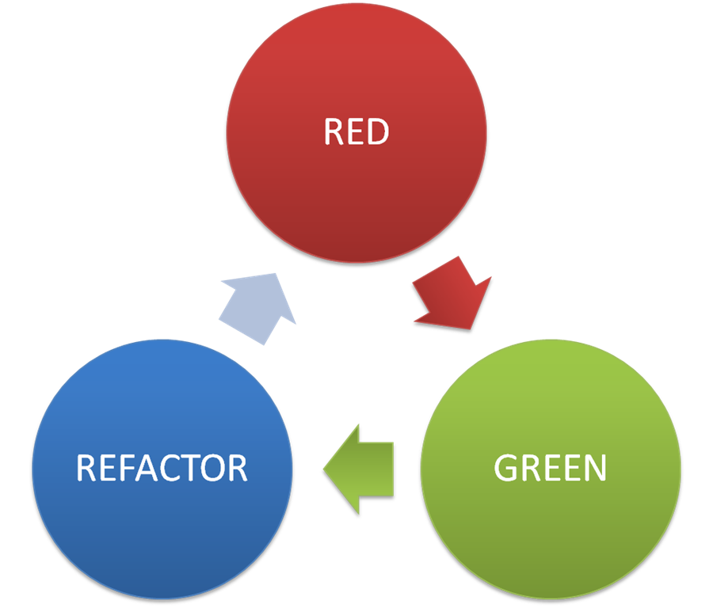

Test-Driven Design
&
Tim Schraepen & Wouter Groeneveld
12/12/2016
TDD Deel 1:
Unit testing

Waarom unit testen?

Waarom unit testen?
- feedback!
- Denk in code vanuit API standpunt
- Makkelijk voor pair om te volgen
- Alle mogelijke paden gedekt
Eigenschappen van een goede test
- Ontdek sneller bugs
- Leesbaar
- Geautomatiseerd
- Snel & gefocuset (test 1 ding)
- Herhaalbaar
- Volgorde onafhankelijk
- Losgekoppeld van de implementatie
- Productie code makkelijker wijzigbaar
Eigenschappen van een goede test
Geautomatiseerd

Eigenschappen van een goede test
"living documentation"

Test Driven Development (TDD)
TDD: "bugfix" edge case
live demoSoorten testen
E2E
Integration
Unit
unit testing
- Onafhankelijk van externen (db, webservice, ...)
- Snel!
- Véél testen
- Test normaal pad & limieten
- "actieve vijand van de code"
integration testing
- Test geïntegreerd met externen (db, webservice, ...)
- Test integratie twee verschillende lagen
- Trager dan unit tests
- Minder test cases
end to end testing
- Test hele applicatie!
- niet alle limieten
- traag, moelijker onderhoudbaar
- Test integratie alle lagen